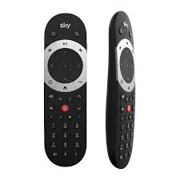

This adapter allows you to control your Sky Q box remotely. Make sure that your Sky Q box is powered on and connected to your network.
You'll need to enter the IP address of your Sky Q box. You can find this in your router's DHCP list or in the Sky Q box's network settings.